Operating Documentation
Direction 5193574-800, Rev# 22
LightSpeed 7.X Service Methods
Module Version 3.0, Version Date 4/23/10
Operating Documentation |
| Required Persons | Preliminary Reqs | Procedure | Finalization |
|---|---|---|---|
| 1 |
| Last Revised on: | 21 April 2010 |
This procedure defines how to prepare the Global Table (GT) and Volume Table (VT) for transport on the Tilting Table Dolly. This dolly configuration is intended to be installed and used on site to allow the table to be transported through small areas or smaller elevators. It is not intended to be used to ship the table long distances. Illustration 1 shows the table in the fully tilted position.
Illustration 1: Table on Tilting Table Dolly
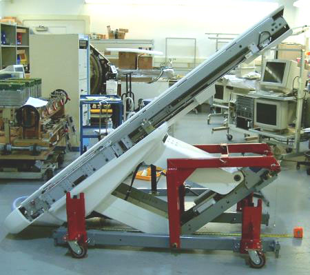
There are two applications for the Tilting Dolly: (1) CT Tables (2) PET Global Tables. These tables may differ slightly, which in some cases require the installation of a yellow IMS Locking Bracket that comes with the Tilting Dolly assembly.
| Item | Qty | Effectivity | Part# | Manufacturer | |
|---|---|---|---|---|---|
| FE Toolkit | 1 | - | - | - | |
The Tilting Table Dolly must be installed on site. The Table must be taken off of its standard shipping Dolly and installed to the Tilting Table Dolly. Make sure to allow for enough room in the area where the exchange will occur. The Tilting Table Dolly should be inspected to make sure it has arrived in good condition. It should have all 4 Caster Towers (shown in red) and a box containing required pins and Yellow Safety Bracket. If it has not arrived in good condition or is missing parts, do not proceed with the dolly exchange until all parts are present. See Illustration 2.
Illustration 2: Tilting Table Dolly on its Shipping Wheels
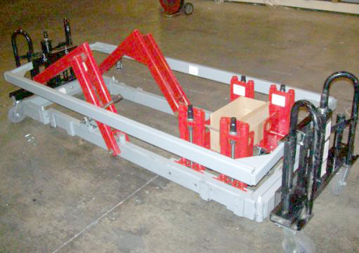
Place the Table in an area big enough for the dolly exchange.
| NOTE: | The minimum space required to exchange the dollies is an area approximately 6 feet (2 meters) in width and 16 feet (5 meters) in length. |
| NOTE: | Do not move the Table on the Tilting Table Dolly without the Cross Bar installed. The Cross Bar provides stability during its move. |
Lower the Table to the floor and remove the Table from its shipping dolly. If necessary, refer to the system installation manual for details on how to remove the shipping dolly.
Lower the Tilting Table Dolly to the floor.
Remove the Tilting Table Dolly side rails. See Illustration 3.
Illustration 3: Remove Tilting Table Dolly Side Rails
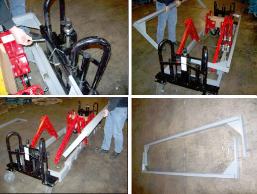
Remove the black Transport Wheels at each end of the Tilting Table Dolly by removing the pins.
Remove the Cross bar at the front of the Tilting Table Dolly main dolly frame.
Remove each of the four adjustable Caster Towers from their transport position and insert and pin them into the slots on the outside of the main Tilting Table Dolly frame. See Illustration 4.
Illustration 4: Reposition Caster Towers to Outside Tilting Table Dolly Frame
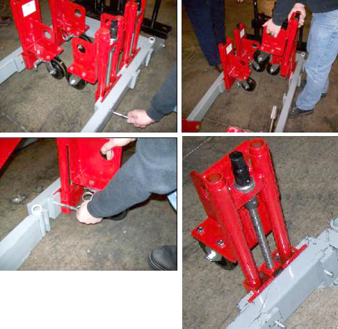
Elevate the caster towers evenly far enough so the Tilting Table Dolly can be rolled freely. See Illustration 5.
Illustration 5: Elevate Tilting Table Dolly Wheels Evenly
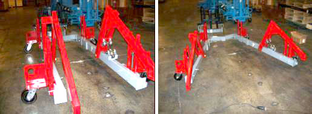
The Tilting Table Dolly is now ready for installation.
| NOTE: | Installing the Black Transport Wheels and Side Rails are only necessary if the Table is to be transported for long distances on site. These would be removed prior to tilting the Table into its full tilt position. |
In this section, the Tilting Table Dolly is attached to the Upper Table Assembly.
Remove the following items from the Table:
Both Table top side covers, leaving the Cradle in place.
All cover brackets from each side of the Table Base and the front cover bracket that spans across the Power Supply/Servo Assembly.
If necessary, remove the front Cross Bar from the Tilting Table Dolly support arms.
Slightly elevate the front two Caster Towers, and partially install the pivot bolts through the Support Arms. These bolts were in the kit supplied with the Tilting Table Dolly. See Illustration 6.
Illustration 6: Caster Towers Mounted and Pivot Bolts Installed
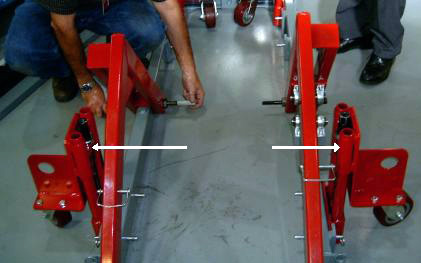
Locate the Picker Brackets in the kit that came with the dolly and attach the Picker Brackets to the gantry end of the Table with 16 mm by 40 mm cap screws. See Illustration 7.
| NOTE: | Retain all hardware bolts, nuts, spacers and washers removed or used. These must be either reused or returned with the Tilting Table Dolly. |
Illustration 7: Dolly Picker Brackets (CT Table Shown)
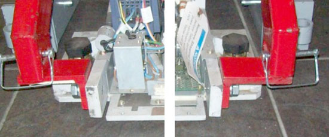
Pivot the Tilting Table Dolly frame open and surround the Table, maintaining approximate equal clearance between the Tilting Table Dolly frame and the Table on each side. The Caster Towers may require adjustment to allow ease of movement.
Pivot the Tilting Table Dolly front frame together until the frame back is approximately square.
Attach and pin the Lift Arms to the Picker Brackets, and also install the front Cross Bracket. See Illustration 8.
Illustration 8: Picker Brackets, Lift Arms/Cross Bracket Installed (CT Table Shown)
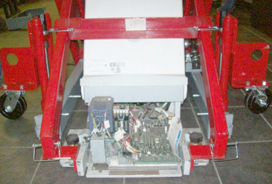
Carefully and squarely align the 16 mm x 240 mm bolts to the Table. Caster Tower adjustments may be required.
Using a 14 mm hex wrench, thread the 16 mm x 240 mm bolts into the Table until their threads extend inboard of the Upper Table Assembly support. See Illustration 9.
| NOTE: | Failure to install these bolts completely through the Lift Arms and Dolly Frame so they extend inside the Dolly frame may result in bending these bolts upon lifting the Table. This will make it extremely difficult to remove these bolts. |
Illustration 9: Installing Lifting Bolts
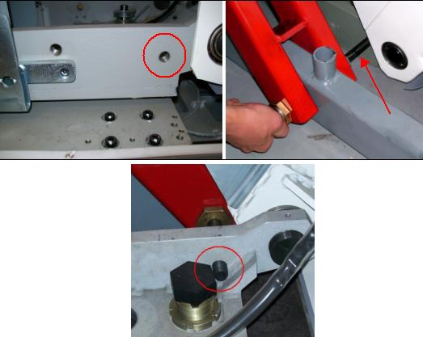
If the Table is going to be moved any great distance from where the Dolly exchange has occurred:
Install the black Transport Wheels.
Install the Side Rails.
Extract the Caster Tower Legs, placing the Table on the floor.
Lift the Table using the black Transport Wheel assemblies.
Tables with movable IMS assemblies have a Drive Bar that must be disconnected from a mount just inside the Table. This allows the IMS to move freely back and forth. Once the Drive Bar is disconnected, the yellow IMS Locking Bracket (comes with the Tilting Table Dolly) must be installed to ensure maximum tilt can be achieved. GT/VT Tables used on all CT systems and the PET DVCT system have Movable Intermediate Support (IMS) assemblies. If necessary, refer to Illustration 10 to identify the type of IMS present.
Illustration 10: Fixed IMS Table (Left) and Movable IMS Table (Right)
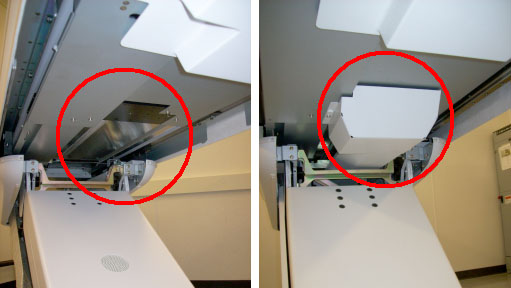
Remove the four bolts holding the IMS Drive Bar (not present on Fixed IMS Tables). This will free up the IMS. See Illustration 11.
Illustration 11: Unbolt Table IMS Support Bar
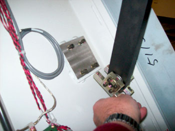
Remove the existing IMS Shipping Bracket. See Illustration 12.
Illustration 12: Existing IMS Shipping Bracket (Movable IMS Table)
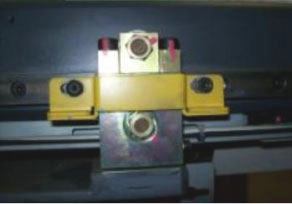
Refer to Illustration 13. Some bolts may need to be removed (top picture) to accommodate the IMS Locking Bracket. Move the IMS all the way back until the proper bolt holes line up and install the IMS Locking Bracket with three removed bolts (bottom picture).
Illustration 13: Install IMS Locking Bracket
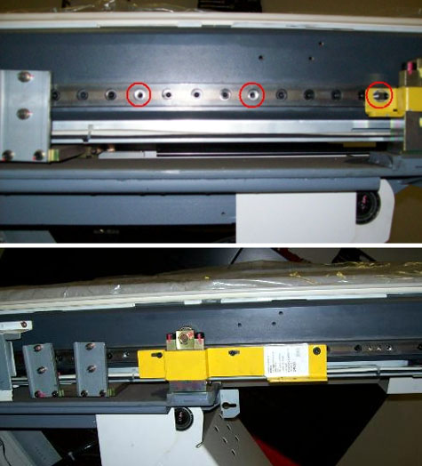
To proceed:
If the Table was moved into position using the black Transport Wheels:
Drop the Table to the floor using the black Transport Wheel jacks.
Remove the Side Rails.
Remove the black Transport Wheels.
Extend the Caster Tower Wheels lifting the Table off the floor.
Proceed to the next section to tilt the Table.
If the Table was moved into position with the Caster Tower Wheels, proceed to the next section to tilt the Table.
Raise the Caster Tower Wheels until the Upper Table Assembly base is a minimum of 2 inches (51 mm) off the floor. See Illustration 14.
Illustration 14: Upper Table Assembly - Side View
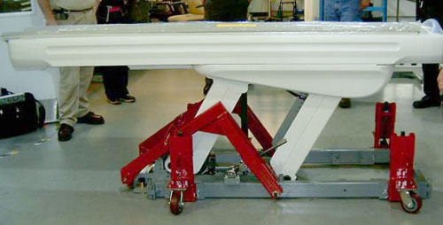
| ||||
| Tip hazard | ||||
| Tilting the table too much WILL CAUSE THE UNIT TO BE VERY UNSTABLE. | ||||
| DO NOT EXCEED THE MAXIMUM TILT HEIGHT OF 80 INCHES (2032 mm). |
Use a wrench to slowly tilt the table to the desired height. See Illustration 15. Make sure that you do not hit the rear table cover at maximum tilt. Do NOT exceed a maximum height of 80 inches (2032 mm).
Illustration 15: Use Wrench to Tilt Dolly
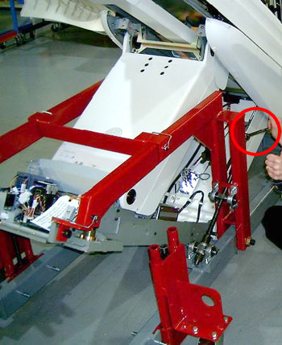
Use the minimum tilt angle needed to provide the necessary clearance for the site obstacles and door thresholds. Achieve a tilt angle that places the Table at its highest point. See Table 1.
Table 1: Dolly/Table Measurements
| Table Position | Caster Tower Height | Table Base (Point Closest to Floor When Tilted) | Maximum Table Height (in) | Maximum Table Height (mm) |
|---|---|---|---|---|
| Maximum | Maximum height | 80 ±0.5 | 2032 ±6 | |
| Minimum Transporting Height (Table Moving) | Minimum 2.0 in. (51 mm) from floor | 75 ±0.5 | 1905 ±6 | |
| Minimum Static Height (Table Not Moving) | Minimum 0.5 in. (13 mm) from floor | 74 ±0.5 | 1880 ±6 |
Once the Upper Table Assembly is at the desired tilt angle, evenly lift the entire unit using the Caster Towers wheels, keeping the unit as low as possible to the floor when moving.
To proceed:
If the Table cannot be placed in front of the CT Gantry at this time:
Completely relieve the dolly of the weight of the Upper Table Assembly by lowering the Caster Towers.
Proceed with preparation for the Table mechanical installation. Move the Table into position when ready to do so.
| NOTE: | The Tilting Dolly should not be used for extended periods to store the Table. If the Table is going to be stored for an extended period transfer the Table to the normal Shipping dolly it originally shipped on. |
If the Scan Room is ready for the Table mechanical Installation:
Move the Table into position in front of the CT Gantry.
Completely relieve the dolly of the weight of the entire Table assembly by lowering the Caster Towers.
Remove the pins from the Lift Arms and Picker Brackets.
Remove the Cross Bracket.
Using a 14 mm hex wrench, remove both 16 mm x 240 mm bolts from each side of the Dolly.
| NOTE: | The Shipping Bracket or Locking Bracket must be in place if the table is to be moved on the dolly. |
Spread the dolly frame and move it away from the Table.
If the Table is in its final position, remove the yellow IMS Locking Bracket.
Reinstall the IMS Support Bar and tighten and torque all 4 bolts to 7.9 Nm (5.8 ft-lb).
Install all previously removed Table cover brackets.
Install the both Table top side covers.
Place all hardware used and any remaining extra hardware including any damaged hardware in the box and tape the box up.
If any hardware was damaged or item damaged on the dolly itself please place a note in the box that identifies the problematic hardware or dolly issue. See Illustration 16 for Box contents.
Illustration 16: Contents of Box Shipped with Tilting Dolly
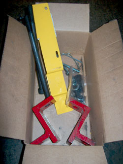
Install the black Transport Wheels to each end of the Tilting Table Dolly Frame. See Illustration 17.
Illustration 17: Install Dolly Wheels
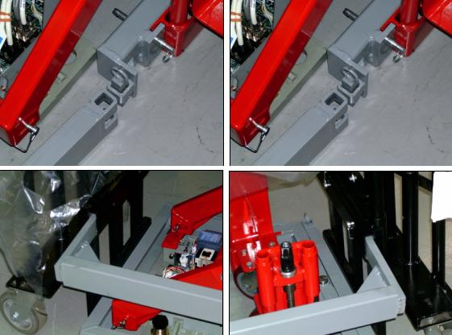
Place all four Caster Towers back into their inside shipping position and pin them in place.
Install the Cross Bar and pin it in place.
Install the Side Rails and pin them in place. See Illustration 18.
Illustration 18: Install Both Side Rails to Transport
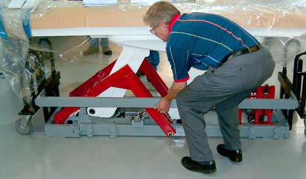
Raise the final assembly on its Transport Wheels and move it out of the way. See Illustration 19.
Illustration 19: Tilting Dolly on its Shipping Wheels Ready For Transport

No finalization steps.